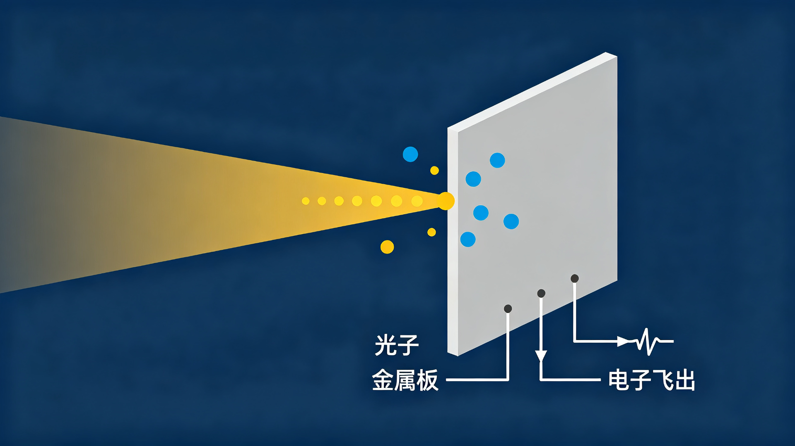

湮没之光
反物质的预言与发现
一个方程的幽灵：狄拉克与反物质
1928年，狄拉克试图把量子力学与狭义相对论统一起来，写下了描述电子的狄拉克方程。这个方程意外地给出两类解：一类对应真实存在的电子，另一类却对应能量为负的"幽灵"态。在经典物理里，负能态意味着不稳定，理应导致电子不断坠向更低的能量，整个原子世界都会崩塌。
狄拉克给出的解释大胆而奇特：真空并非空无一物，而是一片被负能态电子填满的"海"。海中的空穴，表现为一种与电子质量相同、电荷相反的粒子。当时没有任何实验见过这种粒子，它纯粹是方程逼出来的结论。1931年，狄拉克把它称为"反电子"。一个纯理论的预言，就这样被摆在实验物理学家面前。
云室里的一条径迹：安德森发现正电子
1932年，美国物理学家安德森在研究宇宙线时，用云室拍到一条奇特的径迹：它的弯曲方向与电子相反，弯曲程度却和电子相同。安德森起初以为是质子，但径迹的弯曲程度表明它比质子轻得多。它是一粒与电子质量相同、电荷相反的粒子，安德森将其命名为"正电子"。
更值得注意的是，安德森当时并不了解狄拉克的预言。理论家在方程中推演出的幽灵粒子，实验家在云室照片里独立撞见了它，两条线索在同一颗粒子上汇合。1936年，年仅31岁的安德森因发现正电子获诺贝尔物理学奖。
成对产生与湮没辐射：预言被完整证实
1933年，布莱克特与奥基亚利尼在云室中观察到，高能光子可以凭空转化出一对正负电子，物质在能量中诞生，这正与狄拉克的理论吻合。同一年，蒂博与约里奥-居里夫妇先后观测到正电子与电子相遇时发出的特殊辐射：一对能量恰好为511 keV的光子。这是人类第一次直接看到湮没之光。
至此，狄拉克四年前的预言被完整证实：反物质真实存在，正负粒子相遇会湮没，质量化为能量，发出特征性的光。这场始于方程、终于云室的发现，成为二十世纪物理学最戏剧性的篇章之一。
当物质消失，光诞生
湮没：粒子与反粒子的诀别
湮没是粒子物理中最彻底的事件之一：粒子与反粒子相遇，双方消失，质量与动能全部转化为能量。最常见、也最干净的是正负电子湮没，e⁺ + e⁻ → 2γ。广义地说，任何粒子都有反粒子，质子与反质子、中子与反中子相遇同样会湮没；但正负电子湮没在能量与动量上最纯净，也是医学与材料科学中最常用的一种。
为什么恰好是511 keV
质量与能量由E = mc²换算。电子静质量约9.11×10⁻³¹千克，正负电子湮没释放的总能量为2mₑc²，约1.022 MeV。能量守恒要求这份能量以光子的形式带走：若产生两个光子，每个光子能量恰为mₑc²，约511 keV；若只产生一个光子，则必须有第三方参与反冲，才能同时满足动量守恒。
511 keV因此成为湮没之光的"指纹"：无论发生在人体、材料还是宇宙深处，正负电子湮没发出的光都带着这个能量标记。探测到它，就等于确认了一次湮没的发生。

为什么总是成对反向
动量守恒决定了两光子的方向。在质心系中，正负电子初动量之和为零，末态两个光子必须动量等大反向，各自携带511 keV/c的动量。这对反向光子携带湮没位置的信息：它们同时离开，沿同一直线反向飞行。
探测器若能同时捕捉到这两个光子，湮没点就被锁定在这条连线上的某处。正是这个看似简单的几何事实，构成了正电子发射断层成像（PET）的全部物理基础。
湮没之前，先有正电子。PET示踪剂中的富中子核素（如F-18）经β⁺衰变放出正电子，正电子在组织中慢化、漂移约1到2毫米后，才与电子相遇湮没。所以PET图像中每一个湮没点，都近似对应一次核衰变的位置，二者相差的正电子射程，正是空间分辨率的物理上限之一。
让湮没之光停下脚步
最不可见的光
511 keV光子能量极高、穿透力极强，肉眼、镜头甚至半导体感光元件都难以直接捕捉：它穿过探测器材料时相互作用概率很低，直接转换的效率低得可怜；而它沉积的能量又足以打乱常规电路。要让这束光开口说话，必须换一条路。
探测器学家选择了"先停下，再转换"：先让湮没光子停下脚步，把它变成容易处理的可见光，再用电学方法测量。这就是闪烁探测，一条把不可见变成可见、把能量变成数据的完整链路。
闪烁晶体：把伽马光子变成可见光
闪烁晶体的任务，是把511 keV光子的能量高效地转成可见光。今天PET探测器广泛使用的LYSO（硅酸钇镥）晶体，密度高、原子序数大、发光快且产额高：一个511 keV光子被吸收，可以在晶体内激发出上万个蓝紫色可见光光子。
这些可见光光子从晶体中飞出时，已经带着"这里来过一束湮没之光"的全部信息，等待光电探测器读取。
光电效应：把光变成电
可见光光子打在光电探测器上，经光电效应变成电子。1905年爱因斯坦写下的E = hν，在这里成为工程事实：光电倍增管的光电阴极靠外光电效应把光子变成电子，打拿极逐级倍增，一个光子最终可以变成百万个电子；硅光电倍增器（SiPM）靠内光电效应，在半导体中激发电子-空穴对，再经盖革雪崩放大。
微弱到几乎不存在的信号被放大十万到百万倍，光的信息就此变成电的信号。人类今天能够"看见"任何看不见的光，靠的都是爱因斯坦在1905年写下的那条规则。

全数字读出：把电变成数据
传统模数混合PET在模拟前端对脉冲进行放大、整形与判别，进入计算机之前就丢弃了大量信息。数字PET实验室提出的多电压阈值采样（MVT）改变了这一局面：它不再以均匀时钟询问"此刻电压多高"，而是在多个电压阈值处记录脉冲"何时穿过这个高度"，再结合脉冲模型恢复时间、能量与波形。
闪烁脉冲在源头被精确数字化，每一次湮没事件最终变成一行行时间与能量的记录，原始信息得以保留、回溯与重处理。

湮没之光如何看世界
符合探测：寻找湮没发生的坐标
PET的环形探测器同时等待两个方向相反的光子。若两个光子几乎同时到达，探测器便认为它们来自同一次湮没，把事件记在连接两个探测点的直线（响应线）上。收集到足够多的响应线后，重建算法就能反推出体内每个位置的湮没密度。
飞行时间（TOF）进一步利用两个光子的到达时间差：时间差越小，湮没点越靠近响应线的中点。现代全数字PET把时间分辨率推向百皮秒量级，湮没点在这条线上的定位范围被压缩到厘米级甚至更小。
一张代谢的地图
临床上注射的示踪剂（如F-18-FDG）会在代谢活跃的组织中富集，其衰变产生的正电子在组织中漂移约1到2毫米后湮没。湮没之光最终描绘的，是身体里代谢活动的地图：肿瘤的糖酵解、大脑区域的耗氧、心肌的活力、炎症的边界，都以511 keV光子的形式向外诉说。
从肿瘤分期到神经退行性疾病，从药物研发到植物生理，湮没之光在越来越多的地方"看世界"。
湮没之光的其他舞台
在材料科学中，正电子湮没谱学（PAS）利用正电子在材料中湮没的寿命与角分布，反映晶格缺陷与电子结构，是研究金属、半导体与聚合物缺陷的灵敏工具。在质子治疗中，In-beam PET贴近治疗束流布置，用束流诱发产生的正电子核素发出的湮没光子在线验证射程，为精准放疗提供反馈。在宇宙学中，暗物质湮没可能产生可观测的伽马信号，Fermi卫星正以大面积望远镜仰望星空，扫描着宇宙中最剧烈的爆发现象。
- 1928：狄拉克方程预言反粒子的存在；
- 1932：安德森在宇宙线中发现正电子；
- 1933：布莱克特与奥基亚利尼确认正负电子成对产生；
- 1934：湮没辐射（511 keV）被观测确认；
- 1936：安德森获诺贝尔物理学奖；
- 1950年代：正电子成像的早期探索开始；
- 1970年代：PET走向临床研究；
- 1980年代：FDG代谢显像广泛应用；
- 1990年代：LSO/LYSO晶体与飞行时间PET发展；
- 2000年代：硅光电倍增器（SiPM）实用化；
- 2004年起：全数字PET概念与MVT数字化方法提出，湮没事件实现源头数字化。
湮没之光，仍在继续
回望这条线索：一个方程、一张云室照片、一对反向飞行的光子、一块闪烁晶体、一条数字化的电脉冲……人类用一百年，把"湮没"从理论预言变成手术室外的影像。最不可见的光，变成了最清晰的图像。
在数字PET实验室，这条链路还在向更深处延伸：更快的闪烁晶体、更细的时间分辨、更贴近物理的数字化采样，以及单光子级别的灵敏探测。每一次正负电子湮没，都在宇宙中留下一个坐标；每一次探测技术的进步，都在把这个坐标的读数变得更精确。湮没之光的旅程，仍在继续。